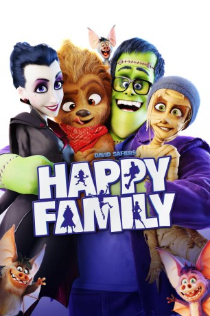

#8350 Happy Family
 gesehen am 12.03.2018
gesehen am 12.03.2018
 
 IMDB-Wertung: 4.7 / 10
IMDB-Wertung: 4.7 / 10  Metascore: 0
Metascore: 0 
Die Wünschmanns sind alles andere als eine glückliche Familie. Mutter Emmas Buchhandlung schreibt tiefrote Zahlen, der völlig überarbeitete Vater Frank leidet unter seinem Chef, das Gehirn der pubertierenden Tochter Fee ist gerade wegen Umbaus geschlossen, und der hochintelligente Sohn Max wird in der Schule gemobbt. Doch damit nicht genug: Auf einem Kostümfest verwandelt die Hexe Baba Yaga die gesamte Familie in Monster.
Jahr: 2017
Dauer: 93 Minuten
FSK: 0
Land: England Studio: Warner Bros.Tonspuren: DTS - ,
Untertitel: Deutsch, Englisch,
Auflösung: 1080p (1920x804) Größe: 6922 MB
Genre: Horror, Komödie, Animation/Trick, Familie
Regisseur: Holger Tappe
Drehbuch: David Safier
Soundtrack: Hendrik Schwarzer
Darsteller:
Datei: X:\Kinder Filme (G-M)\Happy Family (2017, FSK0, 1920x804).mkv seit 28.02.2018
Festplatte: Kinder-Filme+Trick
 Es gibt insgesamt 84 Filme in der Gruppe 'Kinder Filme (G-M)'
Es gibt insgesamt 84 Filme in der Gruppe 'Kinder Filme (G-M)'